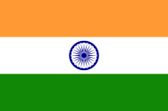

India, officially the Republic of India (Hindi: Bhārat Gaṇarājya),[24] is a country in South Asia. It is the seventh-largest country by area, the second-most populous country, and the most populous democracy in the world. Bounded by the Indian Ocean on the south, the Arabian Sea on the southwest, and the Bay of Bengal on the southeast, it shares land borders with Pakistan to the west;[f] China, Nepal, and Bhutan to the north; and Bangladesh and Myanmar to the east. In the Indian Ocean, India is in the vicinity of Sri Lanka and the Maldives; its Andaman and Nicobar Islands share a maritime border with Thailand, Myanmar and Indonesia. Modern humans arrived on the Indian subcontinent from Africa no later than 55,000 years ago.[25][26][27] Their long occupation, initially in varying forms of isolation as hunter-gatherers, has made the region highly diverse, second only to Africa in human genetic diversity.[28] Settled life emerged on the subcontinent in the western margins of the Indus river basin 9,000 years ago, evolving gradually into the Indus Valley Civilisation of the third millennium BCE.[29] By 1200 BCE, an archaic form of Sanskrit, an Indo-European language, had diffused into India from the northwest,[30][31] unfolding as the language of the Rigveda, and recording the dawning of Hinduism in India.[32] The Dravidian languages of India were supplanted in the northern and western regions.[33] By 400 BCE, stratification and exclusion by caste had emerged within Hinduism,[34] and Buddhism and Jainism had arisen, proclaiming social orders unlinked to heredity.[35] Early political consolidations gave rise to the loose-knit Maurya and Gupta Empires based in the Ganges Basin.[36] Their collective era was suffused with wide-ranging creativity,[37] but also marked by the declining status of women,[38] and the incorporation of untouchability into an organised system of belief.[g][39] In South India, the Middle kingdoms exported Dravidian-languages scripts and religious cultures to the kingdoms of Southeast Asia.[40]
